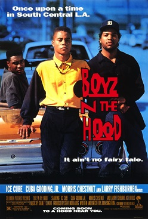

John Singleton
1991
112 minutes
This is a 1990s 'hood coming of age film film that you're doomed to get confused with Menace II Society and New Jack City. This is the one that has Ice Cube in it but it's not Friday. It's the one with Laurence Fishburne playing a character with the delightful name Furious Styles. Cuba Gooding Jr. is the main dude in it, which would mean more to you if you had watched and/or paid closer attention to Jerry Maguire and A Few Good Men.
Most importantly, this starts off with an utterly hilarious flashback that is reminiscent of Stand By Me, the adaptation of the Stephen King coming of age story where a group of kids go on a journey to see a dead body and then get bullied by a bunch of hoodlums. In this film during the "childhood flashback" portion, we see a group of childhood friends playing in the 'hood, including baby-Cuba and chubby-baby-Ice-Cube. One of the friends asks the other kids if they want to go see a dead body. Being pre-teen boys, of course they're ready to take this coming-of-age journey. But instead of going on a long harrowing odyssey down railroad tracks, they instead walk a few hundred yards to the next block and look at some dead guy in their very own neighborhood.
You're not sure how deliberate a parody on the other movie this was, but it is utterly fucking hilarious to you. You're laughing so hard you have to pause the film. And it's even funnier and more tragic when they end up getting bullied by some older kids in their very own neighborhood before they can even walk the two blocks back home. As far as you're concerned they could have ended the film right there, statement made. Coming of age in South Central. Wanna see a dead body? Well, there it is. And...now bullies are stealing our basketball and about ready to kick our asses. John Singleton just said as much in ten minutes with this as Spike Lee says in an entire film. Absolutely worth the price of admission, and you haven't even gotten to the Ice Cube line yet about how "they don't know, don't show, or don't care what's going on in the hood."
Time to choose something different: